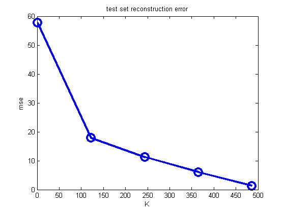
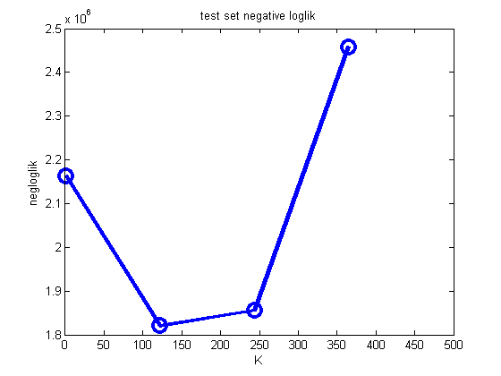

setSeed(0);
if 1
load('mnistALL.mat');
h = 28; w = 28; d= h*w;
ndx = find(mnist.train_labels==3);
ndx = ndx(1:1000); n = length(ndx);
X = double(reshape(mnist.train_images(:,:,ndx),[d n]))';
name = 'mnist3'
end
n = size(X,1)
n2 = floor(n/2);
X = centerCols(X);
Xtrain = X(1:n2,:);
Xtest = X((n2+1):end,:);
Ks = round(linspace(1, rank(Xtrain), 5))
for ki=1:length(Ks)
k = Ks(ki);
[V] = pcaPmtk(Xtrain, k);
Ztest = Xtest*V;
XtestRecon = Ztest*V';
err = (XtestRecon - Xtest);
mse(ki) = sqrt(mean(err(:).^2));
[W,mu,sigma2,evals,evecs] = ppcaFit(Xtrain,k);
[logp] = ppcaLoglik(Xtest, W, mu, sigma2, evals, evecs);
ll(ki) = sum(logp);
end
figure;
plot(Ks, mse(1:length(Ks)), '-o', 'linewidth', 3, 'markersize', 12)
ylabel('mse'); xlabel('K');
title('test set reconstruction error');
printPmtkFigure('pcaVsKrecon')
figure;
plot(Ks, -ll, '-o', 'linewidth', 3, 'markersize', 12)
ylabel('negloglik'); xlabel('K');
title('test set negative loglik');
printPmtkFigure('pcaVsKnll')
name =
mnist3
n =
1000
Ks =
1 122 244 365 486
 